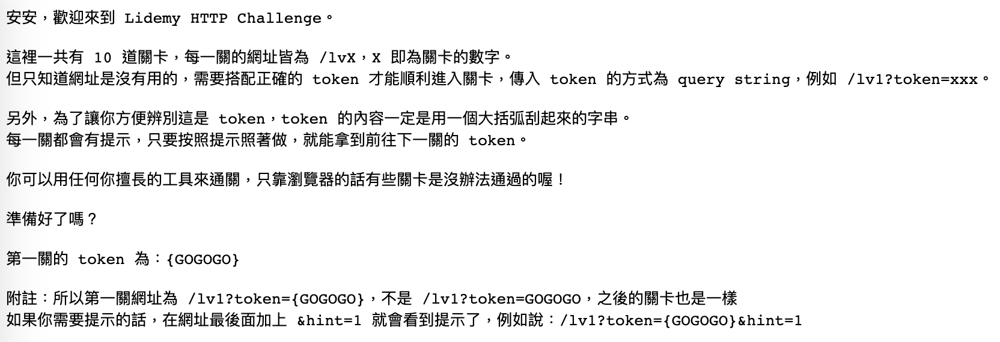

先附上作者部落格說明以及遊戲連結
如果還沒玩過的話，建議先玩，避免破壞體驗，真的想不到答案再來看看解法吧！
初始畫面

簡單的遊戲敘述，只有文字
https://lidemy-http-challenge.herokuapp.com/start
第一關
https://lidemy-http-challenge.herokuapp.com/lv1?token={GOGOGO}
這邊要考驗的是對 GET 的用法，只要在網址後面帶上參數即可，如下
https://lidemy-http-challenge.herokuapp.com/lv1?token={GOGOGO}&name=neil`
這邊會拿到 API 的文件，要先記著之後會用到
就可獲得第二關的 token
第二關
https://lidemy-http-challenge.herokuapp.com/lv2?token={HellOWOrld}
這一關我是用猜的，就從54帶 id 帶到 56
https://lidemy-http-challenge.herokuapp.com/lv2?token={HellOWOrld}&id=56
第三關
https://lidemy-http-challenge.herokuapp.com/lv3?token={5566NO1}
這關我是使用 POSTMAN 通過的
查看 API 文件，使用 POST 方法，並傳入參數。
POST
https://lidemy-http-challenge.herokuapp.com/api/books
header
Content-Type : application/x-www-form-urlencoded
Body
格式 : x-www-form-urlencoded
ISBN : 9789863594475
便會回給你新增成功或是失敗的狀態信息，以及 id
拿到 id 後，同樣再將 id 帶到網址後傳出
https://lidemy-http-challenge.herokuapp.com/lv3?token={5566NO1}&id=1989
第四關
https://lidemy-http-challenge.herokuapp.com/lv4?token={LEarnHOWtoLeArn}
查詢書籍
GET
https://lidemy-http-challenge.herokuapp.com/api/books?q=世界
就可以找到作者是 村上春樹 寫的是哪本書
https://lidemy-http-challenge.herokuapp.com/lv4?token={LEarnHOWtoLeArn}&id=79
第五關
https://lidemy-http-challenge.herokuapp.com/lv5?token={HarukiMurakami}
刪除書籍
DELETE
https://lidemy-http-challenge.herokuapp.com/api/books/23
這沒什麼只是使用 DELETE 方法而已
第六關
https://lidemy-http-challenge.herokuapp.com/lv6?token={CHICKENCUTLET}
獲得新的 API 文件
這邊開始會檢查權限，不是任何人拿到 API 文件，想做什麼就可以的。
GET
https://lidemy-http-challenge.herokuapp.com/api/v2/me
Authorization
Type : Basic Auth
輸入帳號密碼
帳號：admin
密碼：admin123
https://lidemy-http-challenge.herokuapp.com/lv6?token={CHICKENCUTLET}&email=lib@lidemy.com
第七關
https://lidemy-http-challenge.herokuapp.com/lv7?token={SECurityIsImPORTant}
DELETE
https://lidemy-http-challenge.herokuapp.com/api/v2/books/89
第八關
https://lidemy-http-challenge.herokuapp.com/lv8?token={HsifnAerok}
GET
https://lidemy-http-challenge.herokuapp.com/api/v2/books?q=我
之後找到作者四個字，ISBN 最後一個數字為 7 的只有
1 | {"id":72,"name":"日日好日：茶道教我的幸福15味【電影書腰版】","author":"森下典子","ISBN":"9981835427"} |
PATCH
https://lidemy-http-challenge.herokuapp.com/api/v2/books/72
authorization, header 同之前
Body
name : 日日好日：茶道教我的幸福15味【電影書腰版】
ISBN : 9981835423
第九關
https://lidemy-http-challenge.herokuapp.com/lv9?token={NeuN}
這邊告訴我們其實送出去的資訊可以讓我們偽裝是其他瀏覽器送出的 request
GET
https://lidemy-http-challenge.herokuapp.com/api/v2/sys_info
header
X-Library-Number : 20
User-Agent : Mozilla/4.0 (compatible; MSIE 6.0; Windows NT 5.1; SV1)
https://lidemy-http-challenge.herokuapp.com/lv9?token={NeuN}&version=1A4938Jl7
第十關
https://lidemy-http-challenge.herokuapp.com/lv10?token={duZDsG3tvoA}
這關是終極密碼的遊戲，參數帶在網址後傳出即可
https://lidemy-http-challenge.herokuapp.com/lv10?token={duZDsG3tvoA}&num=9613
第十一關
https://lidemy-http-challenge.herokuapp.com/lv11?token={IhateCORS}
GET
https://lidemy-http-challenge.herokuapp.com/api/v3/hello
一開始打招呼的時候，會回給我們以下訊息
您的 origin 不被允許存取此資源，請確認您是從 lidemy.com 送出 request。
這邊其實就有提示，要從 lidemy.com
但其實我一開始並不知道 request 的位置也可以設定，只是猜想瀏覽器可以設定該不會來源也可以設定吧，就找到答案了。
Header
Origin : lidemy.com
第十二關
https://lidemy-http-challenge.herokuapp.com/lv12?token={r3d1r3c7}
GET
https://lidemy-http-challenge.herokuapp.com/api/v3/deliver_token
會被轉址到
https://lidemy-http-challenge.herokuapp.com/api/v3/deliver_token_result
這時會有訊息告訴我們，token 已經給我們
這邊我沒有使用 POSTMAN，因為不知道哪裡可以看到類似瀏覽器查看 requset 的傳遞。
我第一步先是查看 console.log 的部分，發現沒有訊息
再從 Network 裡面去看
不過這部分有卡了一下是因為，一開始輸入網址並沒有打開開發者模式，導致沒有資訊在 network 裡面，然後重新整理 只會出現兩個 request：
- deliver_token_result
- inject.js
後來才發現，網址已經從 A -> C -> B，已經到了 B，我一直重新整理 B 的網址是沒有用的。
所以再次打開 A 的網址：
https://lidemy-http-challenge.herokuapp.com/api/v3/deliver_token
這次有記得先打開開發者模式，就出現了四個 request：
- deliver_token
- stopover
- deliver_token_result
- inject.js
C 就是 stopover ，在其中 header 的地方就可以找到第十三關的 token
第十三關
https://lidemy-http-challenge.herokuapp.com/lv13?token={qspyz}
回傳：
此 request 不是來自菲律賓，禁止存取系統資訊。
這邊也給我們一些資訊，要我們假裝在菲律賓！
但因為不知道該下什麼關鍵字，所以也查看了 hint。
proxy
可以假裝自己是從哪邊來的 request
我是使用 postman，所以設定 proxy 如下：

原本的設定應該是 Use System Proxy
上面自定義設定中的 Proxy Server 是自己去查菲律賓的代理伺服器
再次發送 request 就可以拿到下一關的 token
第十四關
https://lidemy-http-challenge.herokuapp.com/lv14?token={SEOisHard}
1 | 跟那邊的溝通差不多都搞定了，真是太謝謝你了，關於這方面沒什麼問題了！ |
看到這些敘述，毫無頭緒，果斷 hint XD
1 | 伺服器是怎麼辨識是不是 Google 搜尋引擎的？仔細想想之前我們怎麼偽裝自己是 IE6 的 |
啊！原來是要我們偽裝 google
在 header 加上
User-Agnet : Mozilla/5.0 (compatible; Googlebot/2.1; +http://www.google.com/bot.html)
這邊也讓我知道原來可以根據不同瀏覽器顯示不同內容
第十五關
https://lidemy-http-challenge.herokuapp.com/lv15?token={ILOVELIdemy!!!}
心得
通關啦！很感謝 Huli 大大做了這個遊戲，用故事串連整個遊戲，真的很有趣，作者說不定也有說故事的天份。
每個關卡做起來很簡單，但如果你不知道該用什麼解法，你可能想破頭也不知道怎麼辦，這個遊戲讓我知道很多新的名詞。
- Post title：【HTTP】Lidemy Http challenge
- Post author：Neil Yang
- Create time：2019-06-30 00:00:00
- Post link：https://des86532.github.io/2019/06/30/Http/lidemy-http-challenge/
- Copyright Notice：All articles in this blog are licensed under BY-NC-SA unless stating additionally.